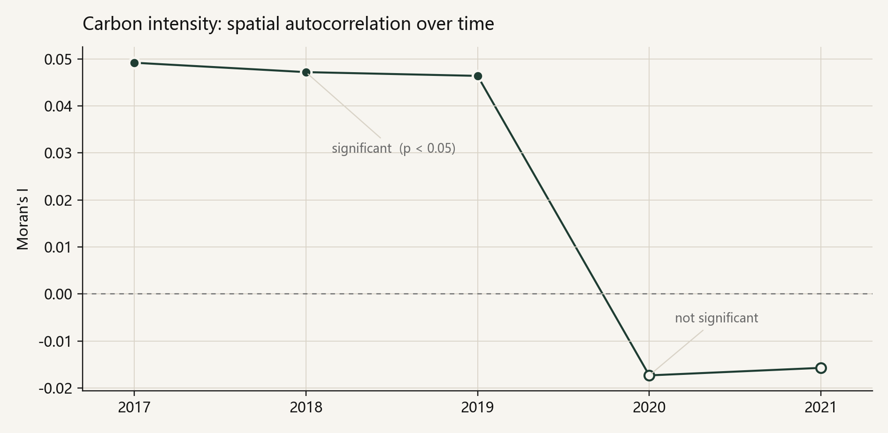
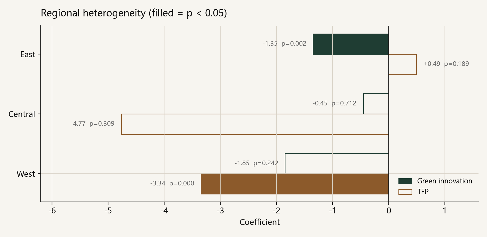
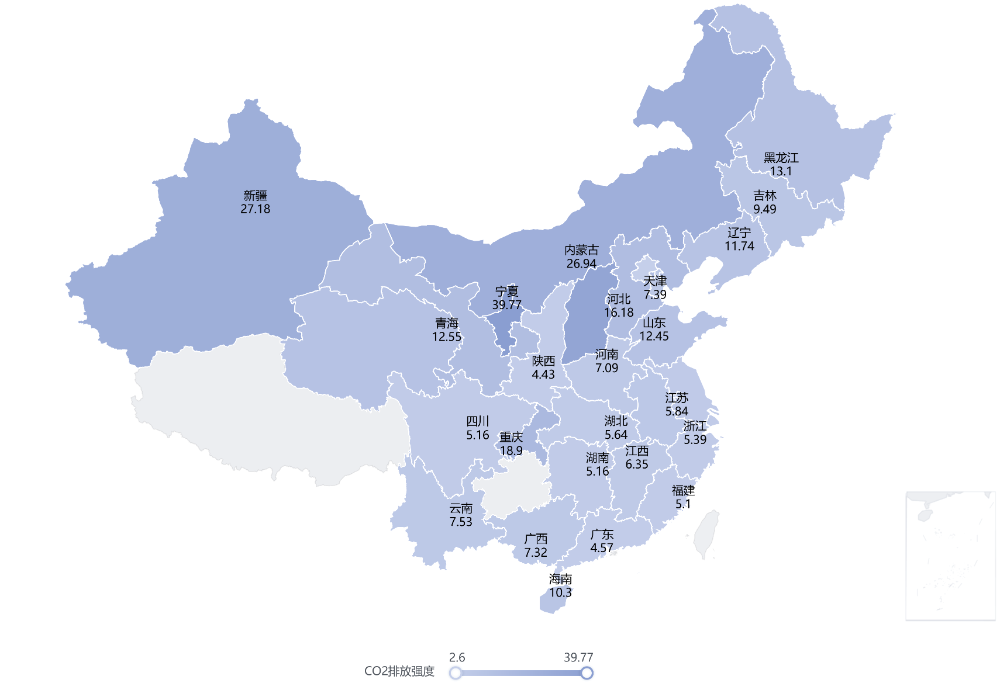

绿色技术创新与区域碳排放
Green Innovation and Regional Carbon Emissions · 第二作者
我负责的那部分，让我第一次遇到“结果不听话”。
01 / Question绿色创新是通过 TFP 影响碳排放的吗？
这个项目想回答两个问题。第一，绿色技术创新是否通过提升全要素生产率（TFP）间接降低碳排放；第二，这种影响是否存在空间溢出——一个省份的绿色技术，会不会影响邻近省份的碳排放。
第二个问题是我负责的部分。它也是整篇论文里最不听话的部分。
02 / Data30 个省份，2017–2021
样本为中国 30 个省（自治区、直辖市），剔除数据缺失严重的西藏，以及港澳台。数据来自国家统计局、中国深度数据库与《中国能源统计年鉴》。
- 被解释变量：二氧化碳排放强度。
- 核心解释变量：专利申请数（取对数），作为绿色技术创新的代理。
- 中介变量：全要素生产率，用 DEA-Malmquist 测算；投入为就业人数、固定资产投资、电力消费，产出为 GDP 与二氧化碳排放。
- 控制变量：煤炭占比、人均 GDP、第二产业增加量。
- 空间权重矩阵：地理距离的倒数。
03 / Method从基准回归到空间模型
先用省份固定效应做基准回归，再用逐步法检验 TFP 的中介效应。空间部分先做 Moran's I，确认是否存在空间自相关；再比较 SAR 与 SEM，按空间项的显著性与拟合优度选择模型；最后分东、中、西做异质性检验。
我负责数据清洗、空间权重矩阵构建、SAR/SEM 估计与稳健性检验。论文署名第二作者。
04 / Result结论对设定很敏感
| 模型 | 绿色创新 | 空间项 | 读法 |
|---|---|---|---|
| 基准 FE（加控制） | −2.081** | — | 5% 显著 |
| 标准化基准 | −0.5151 | — | p=0.395，不显著 |
| SEM | −0.564*** | −2.462 (1.824) | 空间项不显著 |
| SAR | −0.506** | −0.312 (1.384) | 空间项不显著 |
括号内为标准误。核心解释变量在多数设定下为负，但空间项本身都不显著。这意味着：可以说绿色创新与碳强度存在负相关，但不能说存在显著的空间溢出。
Moran's I 也支持这个谨慎的读法：2017–2019 年显著为正，2020 年后转负且不显著。



What I learned
我原本以为“空间溢出”会是一个漂亮的结论。跑完之后发现，空间项不显著，而且结论对变量标准化与模型设定很敏感。这让我第一次意识到：显著性不是结论，稳健性才是。
如果重写，我会把这篇论文的核心变成一个负面结果：在省级面板上，绿色创新的空间溢出并不稳健。 这比硬写一个显著结论更有价值。
05 / Limitation四个限制
- 空间溢出没有得到稳健支持。SAR 与 SEM 的空间项都不显著，论文里“存在空间溢出”的表述应该降级为“存在空间关联的迹象”。
- 结论对设定敏感。基准回归在加控制变量后为 −2.081（5% 显著），换成标准化变量后为 −0.5151（p=0.395）。
- 中介效应在 10% 水平。不是 5%。
- 2020 年的结构变化。疫情冲击可能改变了空间模式，五年样本不足以区分结构性变化与短期冲击。
06 / Next如果再做一次
- 换几种空间权重矩阵（经济距离、邻接、嵌套），看空间项是否稳健。
- 做安慰剂检验与随机置换，排除偶然显著。
- 用更细的绿色专利分类，区分光伏、氢能、碳捕捉。
- 如果结果仍不稳健，就把它写成一篇负面结果短文。